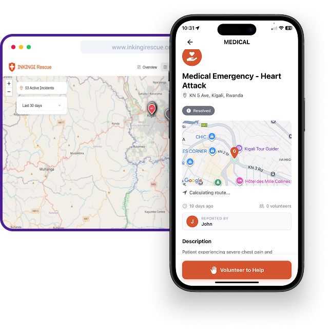

Problem Statement
To achieve a 1:20,000 citizen-to-ambulance ratio, the Ministry of Health expanded Rwanda's ambulance fleet to 510 vehicles by 2025, despite that the pre-hospital mortality remains exponential. Due to delays in coordination caused by traffic, unprecise locations, unconcise information and lack of awareness from neighbouring individuals and average response time of 15 minutes (MOH, 2024), 47% to 50% of injury-related deaths in Rwanda occur before patients reach a hospital. NGAZI Initiative's goal is to bridge the gap by building a coordination system to reduce emergency response times and decrease pre-hospital mortality within Kigali, ensuring more lives are saved during critical moments.
Our Solutions
A GPS-powered,community based emergency applicaton built for everyone on any device

MEET
INKINGI Rescue
INKINGI Rescue is an emergency reporting system that connects professional responders with trusted community networks. With features like GPS-based “Shake-to-Signal” activation, it instantly alerts emergency services, your designated Circle of Trust, and nearby helpers, ensuring rapid assistance even if the user is unconcious.
learn more